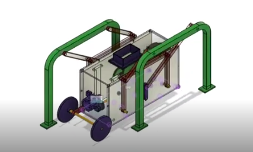
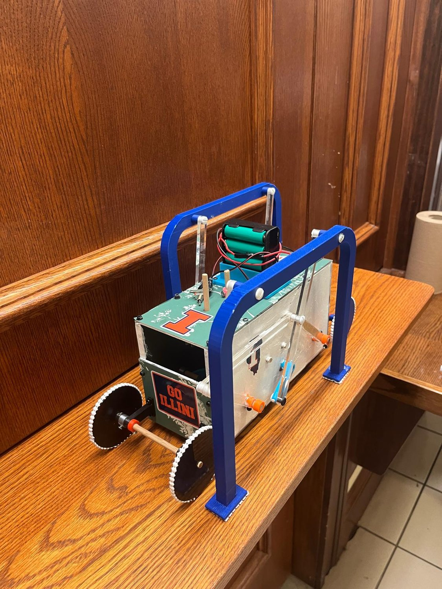

ME 370 · MECHANICAL DESIGN
Chebyshev
Linkage Robot.
Designed, analyzed, and manufactured a robot to travel at least 4 m/min and dispense every 2 m.
DESIGN, PVA ANALYSIS & MANUFACTURING↓ SCROLL TO EXPLORE
MY ROLEProject design, Chebyshev linkage, PVA analysis, gear sizing, and manufacturing
TOOLS & METHODSFusion 360, PMKS+, shop tools, rapid prototyping, gear sizing and hand calculations
DESIGN TARGET4 m/min minimum speed · dispensing every 2 m
01 / OBJECTIVE
Travel. Dispense.
Repeat.
- Design a robot that travels at least 4 m/min.
- Dispense at 2 m intervals while moving.
- Develop a mechanical linkage and dispensing mechanism that could be manufactured and assembled with the available tools and tolerances.
02 / DESIGN PROCESS
Choosing the simpler mechanism.
01
Chebyshev linkage
- I chose a Chebyshev linkage because it required fewer links.
- The parts had open tolerances, so additional linkages increased the chance of interference and collisions.
02
PVA analysis
- Simulated the linkage trajectory in PMKS+ to validate the intended path.
- Used position, velocity, and acceleration analysis to inform the linkage design.
03
Power transfer
- Designed and manufactured the linkage assembly.
- Used bevel gears to transfer power from the linkage drive to the dispensing mechanism.
- Sized the spur and bevel gears using tooth counts, diameters and target shaft speeds.
- Checked gear center distances and tolerances to support a workable assembly.




03 / TESTING & VALIDATION
From simulation
to motion.
- Validated the foot trajectory in PMKS+ before manufacturing.
- Built and tested the finished robot for travel speed and dispensing distance.
- Compared the achieved dispensing interval against the 2 m target.
04 / RESULTS
Built and tested.
6 m/min
Travel speed
- Exceeded the minimum requirement of 4 m/min.
7.5%
Dispensing-distance error
- Measured displacement-distance error in the finished robot.
NEXT PROJECT
View project ↗